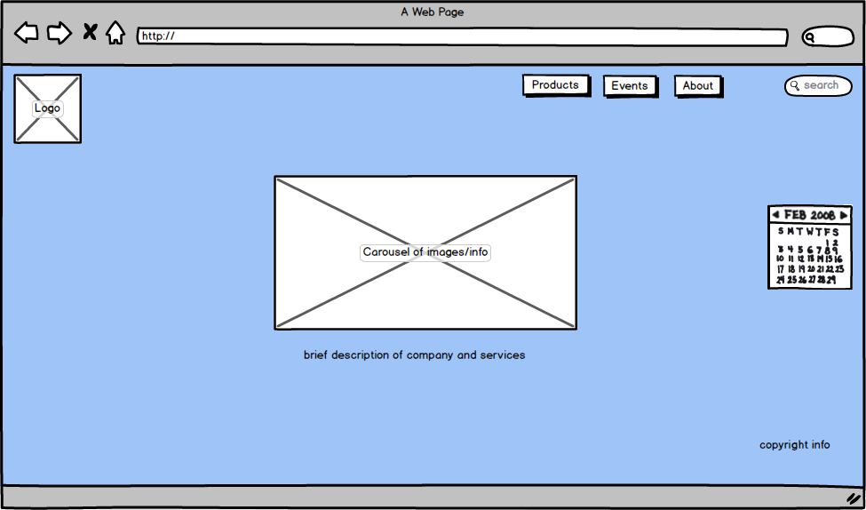
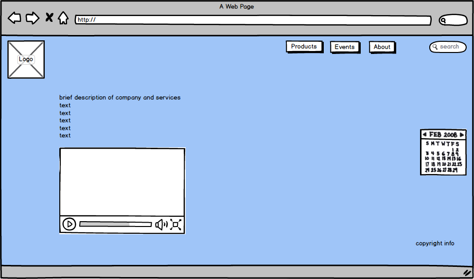

The sites for Squarespace and MailChimp.
The Squarespace site utilizes space effectively in that the home page does not have a long scrolling page like so many sites do. Also, the balance of the home page is effective in that the nav bar at the top right only has 3 buttons with the menu button having the hamburger icon where you can click on it and it has a drop down of the remaining page options.
The Mailchimp home page is similar to Squarespace's in that it doesn't require the user to scroll down it. The negative space is effective in that it allows the user to focus on what they need to accomplish and I like the javascript effects that show you how their enewsletters operate without having to watch videos.The Squarespace site and Mailchimp site both limit the amount of information on their home pages which I like instead of overburdening you with information. The Squarespace site utilizes the popular hamburger icon to allow the user to click on the page they'd like to navigate to. Some do not like this icon or are unaware of what it is but I think its effective since a lot of sites use this type of format with responsive design when the page is minimized to the mobile size and shows this hamburger icon effect.
Positive space is dominant over negative space in this thumbnail sketch. The images become the focal point by the size of each being so large. The balance brings the user's eyes to the right and down which is the natural way Westerners would read and therefore the flow is nice.
The space here is a play on the apple.com page. Very plain with vast negative space. It draws the viewers eyes to the focal point of the large image in the center. The balance is different also because the shape of the icons for other pages are changed to triangles facing the right which implies that they bring you somewhere.
